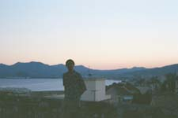

(2000-07-07) Day 24
The overnight train to Grenoble dropped us off in
Geneva, where we switched. This was our token stay in Switzerland, although
we didn't even have time to get postcards.
Grenoble (2000-07-07) Day 23
| We
spent the day way up on the mountain at the Bastille. This city is central
to many ski resorts, so we were actually there in the off-season. The mountains
of the Alps are amazing! We could see Mt Blanc as well, 4800 meters high.
We met Arnoud and had a splendid dinner of sausage from Lyon. Sleep this
night was as the dead enjoy, as the sleepiest way to travel does not seem
to be on the sleepy car (an advertisement had claimed this in Amsterdam). |
Cannes (2000-07-08) Day 24
| A
five-hour train ride has brought us to the French Riviera. Most enjoyable!
We prepared a fine spaghetti & peppers dinner with a bottle of wine,
only $6 for the both of us. On the way to the beach we partook of the French
drink Pastis, which has a strong Anis flavor. The beach at sunset was perfect,
and before we left we made a large Serpinski triangle in the sand. |
Cannes (2000-07-09) Day 25
| The
movie stars come here for the film festival, and it's a beautiful place
to come. The sidewalks by the beach are full of handprints from the stars.
We spent the morning on the beach, and in the shady grass. Palm trees,
rocky hills, and a southern style of architecture make this place just
so darn cozy. |
Monaco / Monte Carlo (2000-07-10) Day 26
I went off on my own today and took a train East
along the Mediterranean coast to find Monte Carlo. If you're a computer
graphics buff (I am) than Monte Carlo is a must, as it has the icon of
all randomness and chance, THE Monte Carlo Casino! Quite impressive, the
city is most beautiful. The rocky hills thrust their way up out of the
ocean and sprinkled along them are the wealthy buildings of the city.
Nice (2000-07-10) Day 26
Nice was not nice at all. I got off the train on
the way back from Monte Carlo just to be rained upon for an hour. Cannes
is much nicer than Nice, in my opinion.
Cannes (2000-07-10) Day 26
It was raining, so everyone was at the hostel. We
had some fine conversations with people from all over... [Sweden, England,
Slovenia, France]. It's almost time for our night train out, just a quick
stop for Internet.
Barcelona (2000-07-11) Day 27
| We
decided it would be great to get a taste of Spain while we were close.
A sleeper car in, and a horrible morning trying to find a place to stay.
The place we did eventually find was one city South! An hour bus ride got
us there, only to find all restaurants closed. Whatever, so I did find
a bottle of wine, which I inhaled half of (quite a nice way to consume
wine), and we just wrote in journals and so forth and got some good rest. |
Barcelona (2000-07-12) Day 28
| We
took a bit waking up, and decided to get out on a sleeping train. So, let's
see, that left us less than 5 hours to see all of Barcelona! Well, we stepped
up to the challenge and darted right out. We followed the advice of Mark,
from Quebec, which was to see the Sagrada Familia Cathedral. It is a work
in Progress, but already stunning. Most of the steeples are up, and the
plans were finished. It is of a style of architecture known as Modernisme
(which contains many organic elements (the pillars branch as trees, and
the vault ceilings resemble leaves. After, we saw the Parc Guell, which
was wonderfully designed, and offered a grand view of the city and Mediterranean.
There I was toasted by another visitor enjoying wine, as I finished the
second half of my bottle. We raced downtown and saw the Palau de la Musica
Catalana (for the Modernisme again) and the Esglesia Santa Maria del Mar's
Cathedral (which was also very stunning). Whew, all that and a race to
the train station and we were out. |
|